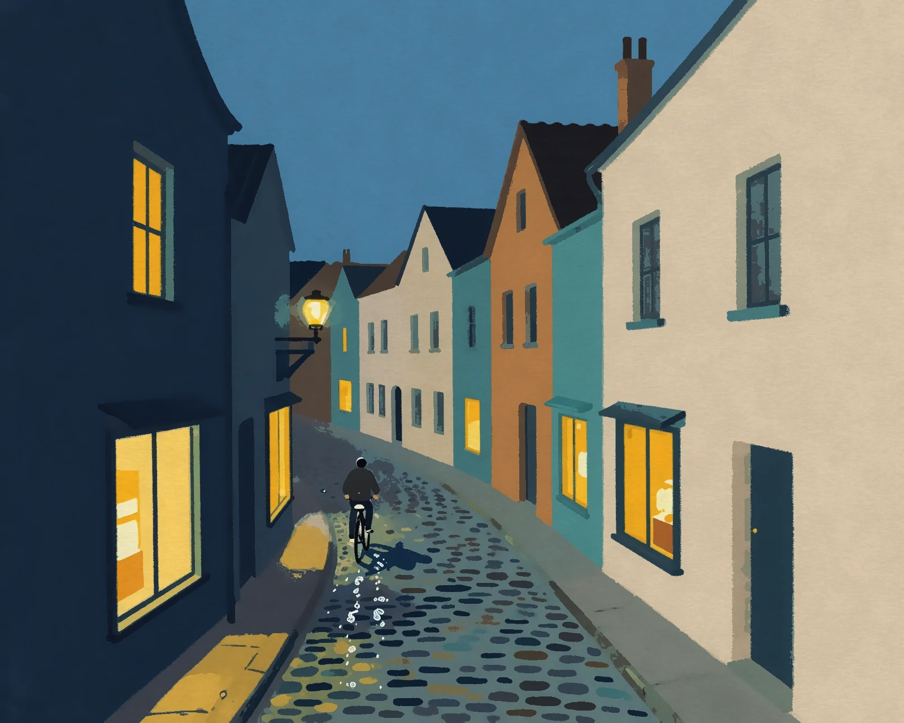
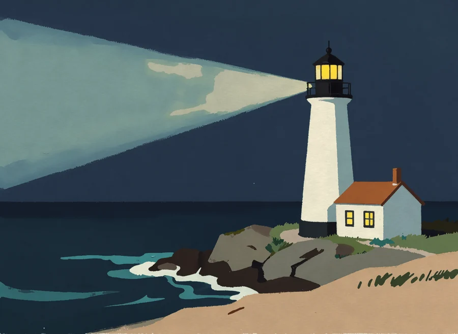
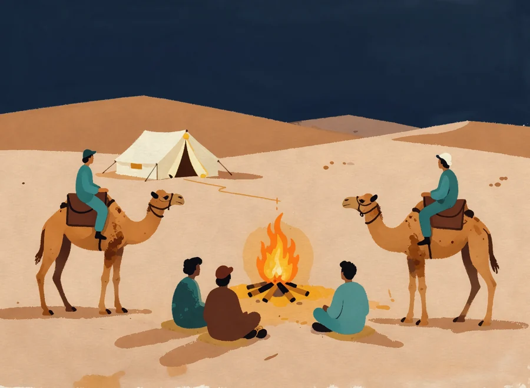
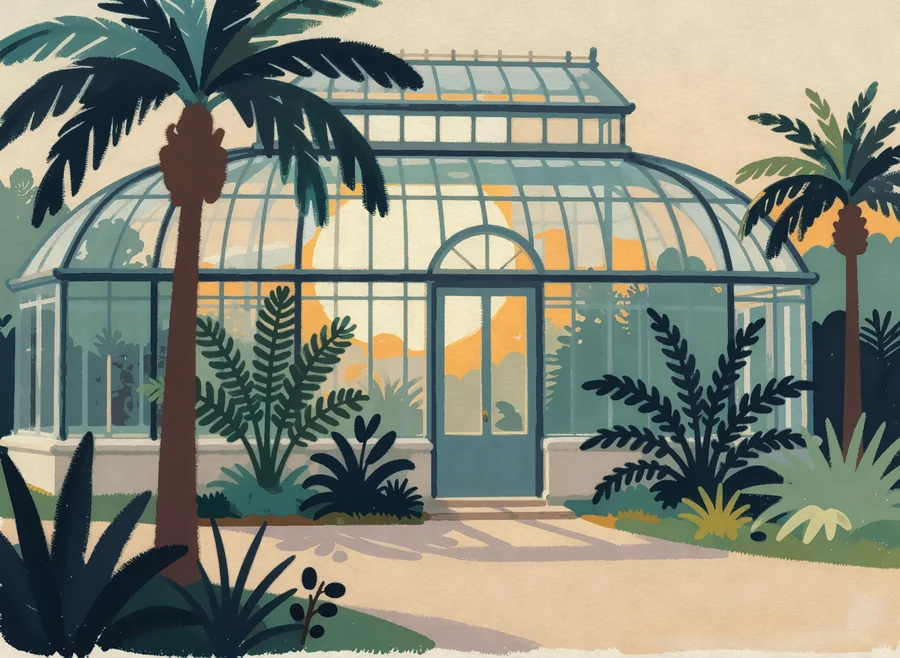
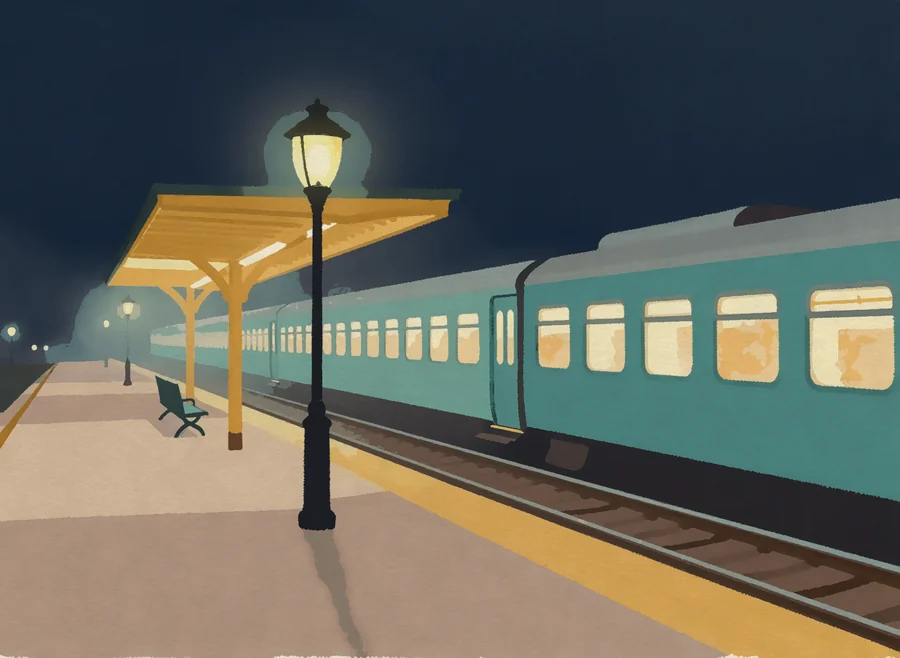

Try it here
Carry the lantern down to the shore.
Light one thing and the rest goes quiet. Move across the lake and the pines, the mist and the boat come and go with you.
On a phone, touch the picture and the lantern follows your finger.
Most image tools hand you a finished frame and a prompt box. Gloamery hands you the lamp, one source you can carry round the scene until the story sits where you want it.

Gloamery finds the lamps, windows and fires it painted and lets you turn each one up, down or off. The rest of the scene answers, down to the wet cobbles.
Light one thing and the rest goes quiet. Move across the lake and the pines, the mist and the boat come and go with you.
I used to light a scene by painting it again. Now I pick up the lamp.Noor Halvorsen, background painter (a fictional quote)
Every one started as a pencil rough and a single light source.




Painting with Gloamery at